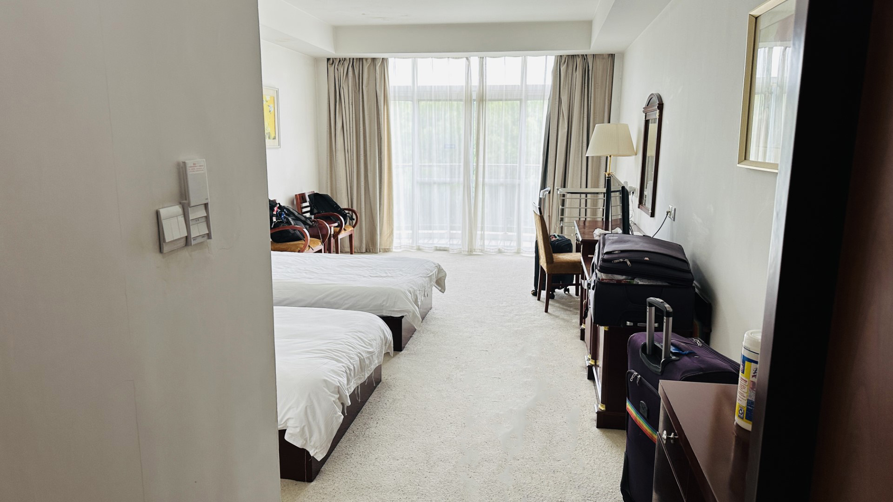
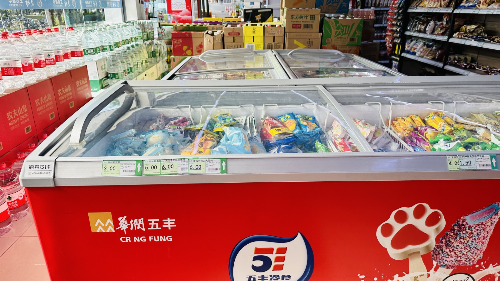

Short Report

Room and Board

I arrived late at night the first week, left the same week, and returned the week after (in the morning), and was assigned a different yet similar room, so I was able to document the experience following the second week.
It appears that college visitors (and other guests to the college) will stay at the Academic Exchange Center (which also doubled as an “on-campus hotel”), so the International Office put me up in one of those rooms there.


In all of the rooms I stayed in, there were 2 beds, a desk, a TV, and 2 loungers. Each room had a bathroom with a shower. I could not tell if the rooms had been vacuumed, and I found dust in many locations around the room.
I took photos in room A309, the first room I was assigned to. It was at the end of the building, right next to a fire escape with a door that wouldn’t close. Sometimes, I’d hear it creak open before hitting the wall (the door didn’t fit). It was starting to get annoying, so I ended up switching to room A307.
Classrooms
CIT’s international program took place 2 buildings away from my location. The International Office is also located in the same place. The classes I took were located on the same floor, the 2nd floor, of the Xuedao building.

Going up the stairs to the right was the director’s office, complete with 2 desks and a couch for guests.


Going down the hallway, there was a conference/exhibition room with stuffed bears (apparently promoting cooperation between CIT and multiple American universities) and posters.


To the left of the stairs were two ESL classrooms (aptly named ESL 1 and ESL 2, in the order closest to the stairs). Both classrooms are probably the same size, although ESL 1 had more desks and chairs, making it feel cozier.

Meanwhile, there were 2 mini-Christmas trees in ESL 2.
Classes
I had the opportunity to take 3 classes - 2 with Stout and 1 with Eau Claire (which I had to audit because of prior commitments), both UW schools. The 2 classes with Stout were American Folklore (ENGL) and University Success (ESL), all taught by Justin. I audited my class at Eau Claire - Languages and Intercultural Competence - so won’t be spending too much time talking about this class.
Everyone taking these classes will be spending some time at these respective universities, so both instructors talked about some of the things to expect while on this side of the ocean.
American Folklore is a higher-level English class that was taught by Justin - one of my favorite professors - and was slightly modified because of the target audience such that Chinese folklore was also introduced in the class. Having never studied folklore before - with my limited understanding of both American and Chinese folklore - it was a little bit of a challenging start. I returned back to my room after class and did some online research to familiarize myself with some of the more popular folklore in Wisconsin - like Paul Bunyan and some of the Native American stories from various tribes across the state.
There were two large writing assignments in the course, but all of them were in-class activities. There were eight total classes, each of them two-and-a-half hours long, so Justin printed out packets containing all class activities. This meant that we knew what to expect, and while there was no official “homework,” I would have a good idea of what to expect in the next class (and do some preparation beforehand so I could give my best work). Noteworthy is that Justin collected the packets (so we didn’t need to worry about keeping them), but I thought it was a better idea to look ahead, write a few notes on what to prepare for, and prepare for the next class ahead of time.
University Success was structured much like American Folklore (seeing it was also taught by Justin), but mainly was based on college life in the U.S. and life in Menomonie. There was a short segment on the visa application for new students (I believe F1 visa), but we also spent time on what to do in Menomonie - especially in the winter. All activities done in class as well.
Classmates
I was first introduced to the student leader of the Food Science program. I believe he is responsible for communicating with his classmates and instructors as well as checking with classmates, but not sure. He shows up early to class and I often see him being the last to leave.
For the first class, I showed up about 15 minutes early. I’m someone who likes to show up early, and particularly wanted to see how things went. Justin was already there setting things up for class. I grabbed a seat in the front row, near the door. The student leader showed up a few minutes after, grabbing a seat next to me, also in the front row.
Everyone else, however, grabbed seats in the back, preferring to be less spread out in the back. There were a few that grabbed seats behind the student leader and me, and they seemed to be closer friends to him.
It appeared that “groups” had already formed before class, though the group sitting close to me immediately “adopted” me, so we did most of the classwork together.
There’s always the “who is this guy that I’ve never seen before” at the beginning of any term. After getting to know the group sitting behind us, we got along during class. They would ask me questions about how life was like in Menomonie. In turn, they shared with me how to get around and told me what to eat from the cafeteria.
One of my new friends was a local - from the Changshu area - so he knew a lot of places around the area and recommended a place to eat, so our group went out after the summer term ended and we spent a night downtown.
Food (on campus)
There are two cafeterias and a staff cafeteria. I was provided vouchers for the staff cafeteria, though I didn’t use them very often even though it was the building next door.
From the Exchange center, it was about a short 5-10 minute walk to either cafeteria (on the upper for the South cafeteria). All of them are located on the west side. I frequented both cafeterias roughly equally, although I’d order to-go more often as I had personal projects I wanted to complete back at the exchange center.
While there weren’t many options available for breakfast, I completely lost track of how many options were available during other times of the day. Most noteworthy was how all options were available for less than 20 RMB (and less than 15 for most cases). I paid using WeChat Pay - they would scan your QR code - although I didn’t see a tap-to-pay option available.
I also had the opportunity to get breakfast at the Staff cafeteria. Even though there were less options available, I found it convenient if I had to be quick (full disclosure: I only ate there on the last day, and it was because I had never been there before but had about-to-expire vouchers).
 Finally, there were two supermarkets - both on the west side - and a fruit shop. I frequented one of the supermarkets for daily ice cream and tried probably 60-70% of the options available.
As for what was available... we'll just say that the school-provided options were impressive... and that I didn't have any trouble finding something good to eat.
More about food here - lots of options!